模型绑定
这篇讲解，如何使用模型绑定 MVVM 功能。工具端目前仅简单实现模型的双向绑定。对于表达式、规则等高级功能，后续会逐步完善。
- 1. 支持的消息类型
- 2. 创建模型
- 3. 模型绑定
- 4. 仿真
- 5. 模型调试
- 6. 模型绑定实现原理
- 7. 实现系统时间绑定更新
- 8. 实现图片绑定更新
- 9. 实现控件状态绑定更新
- 10. 实现控件的隐藏显示
- 11. 手动更新消息
- 12. 控件绑定模型顺序
- 13. 跨模型联动
- 14. 控件绑定模型列表、自定义 Set_cb
支持的消息类型
- int32_t
- lv_state_t
- char *
- char **
- lv_calendar_date_t
- lv_color_t
- bool
- int32_t *
- lv_point_t
- lv_point_t *
- lv_coord_t
- lv_coord_t *
- tm
- res image id
创建模型
定义一个名字叫“model”的模型，并有一个int32_t value和一个char * str的属性。
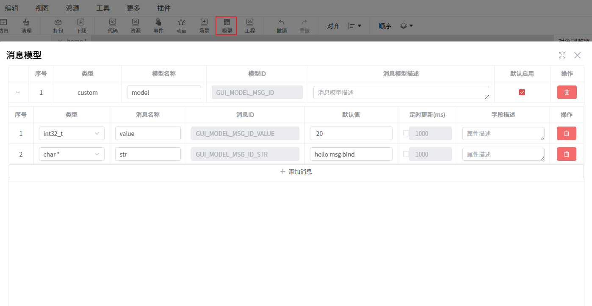
模型绑定
数字绑定
创建一个slider和一个textprogress控件，将控件的初始值都绑定到消息model 属性value
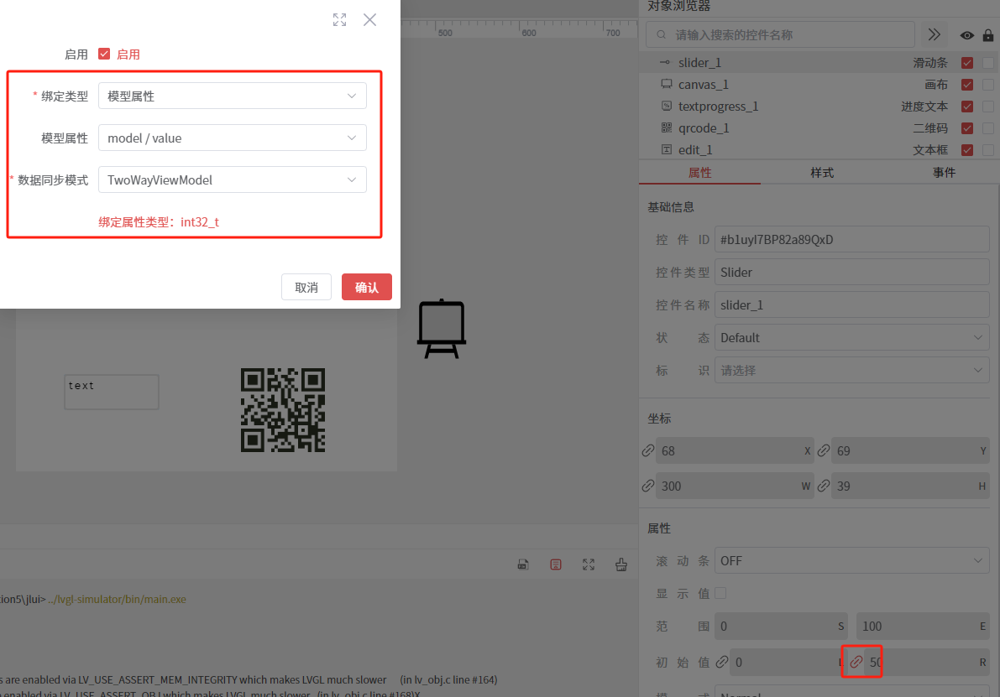
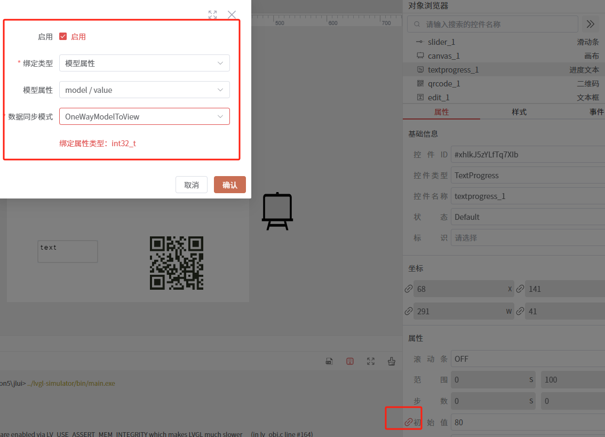
文本绑定
新建一个edit文本输入控件，一个qrcode二维码控件。将控件都绑定到消息model属性str上。
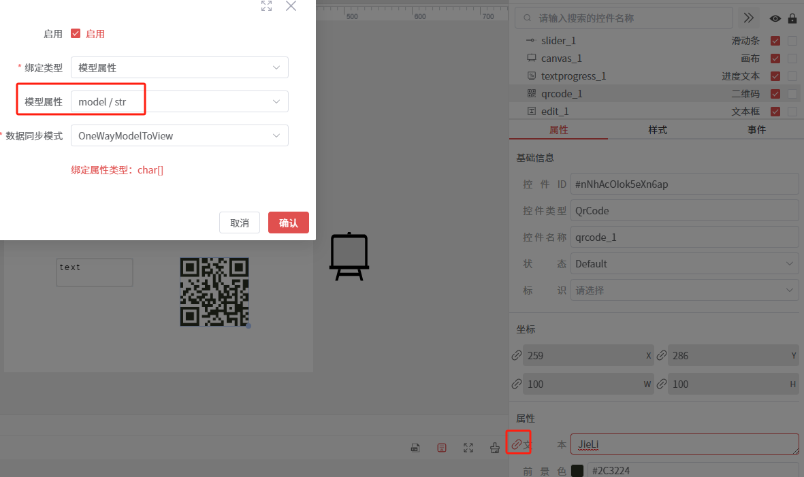
仿真
编译、仿真后，可以拖动slider来改变textprogress控件的值。修改edit的值，旁边的二维码会跟着变。
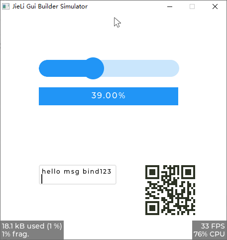
模型调试
- 启用模型调试框
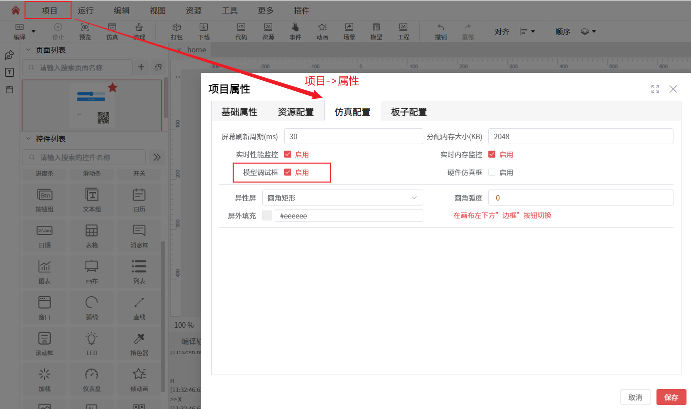
- 启用工具右下角的
调试器
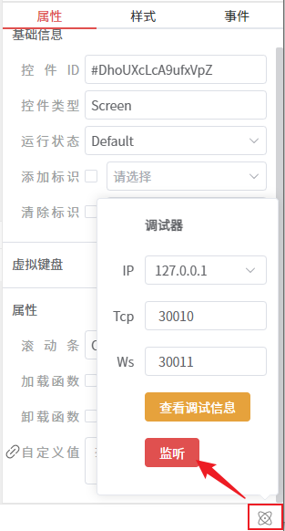
- 重新仿真、在模型调试框中查看、修改消息属性
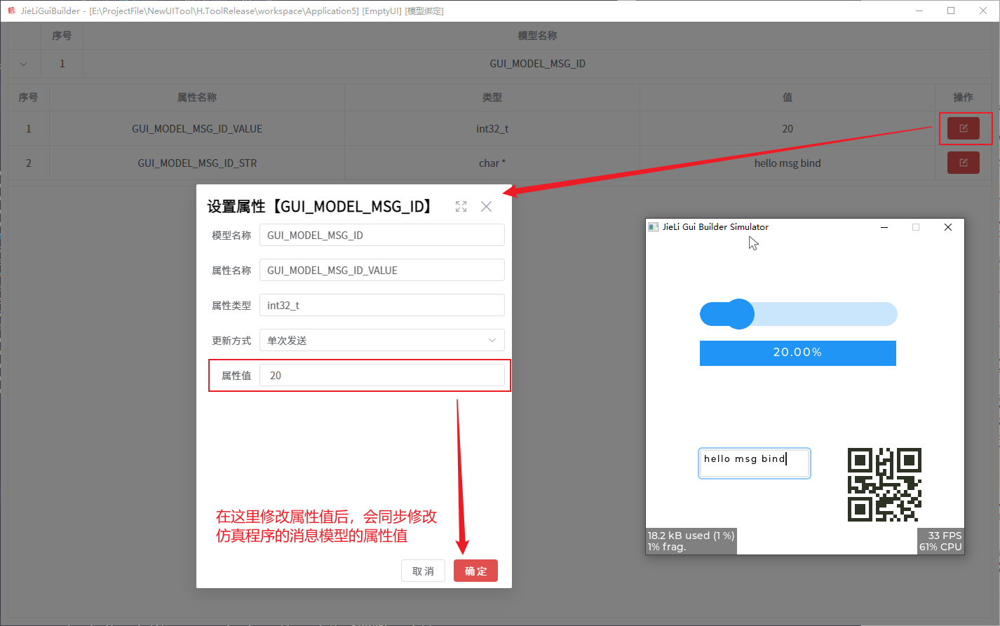
模型绑定实现原理
每创建一个消息模型，都会生成一个消息ID和一个消息动作函数，当控件绑定到该消息模型上时，会为控件注册该消息ID的消息事件回调函数，在回调函数中，会将控件的值和模型的值利用消息动作函数来进行双向绑定。
在上面的例子中，可以看到生成的文件和代码如下，会创建gui_msg.h和gui_msg.c文件，以及模型gui_model_msg.h和gui_model_msg.c文件。
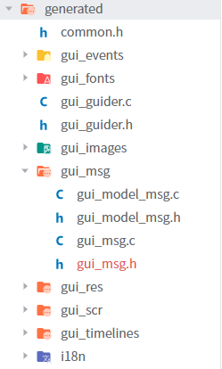
工具自动生成的消息动作函数是一个弱函数，当用户没有实现该函数时，会使用默认的消息动作函数，该函数只在仿真时有效，用户需要根据自己的需求来实现该函数。
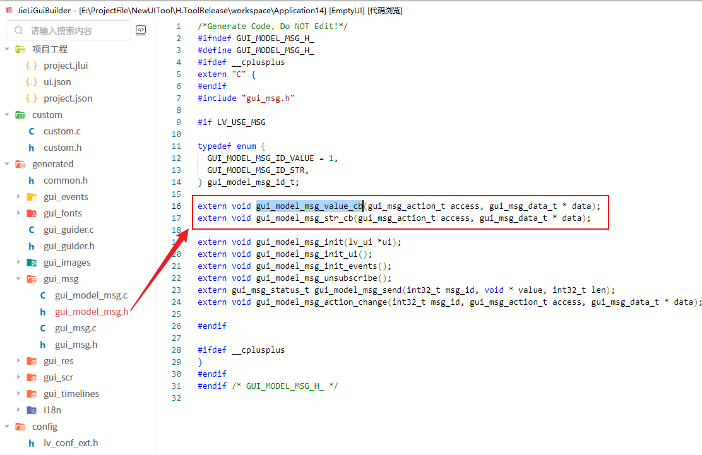
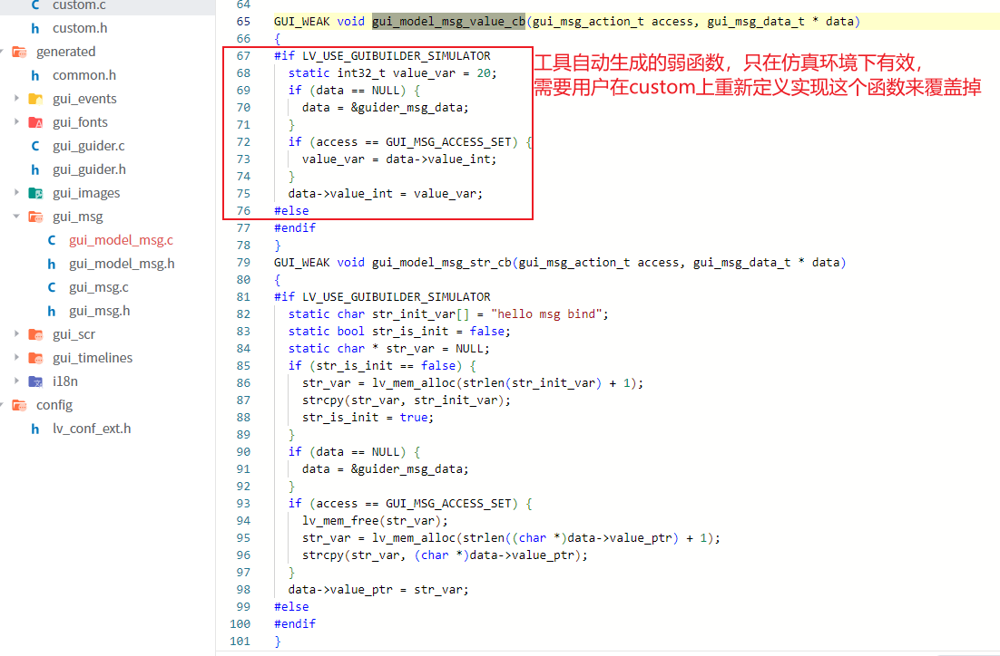
比如value消息的数据来源是一个传感器的值，只能读取，其他动作不处理，那么可以在custom上这么实现：
void gui_model_msg_value_cb(gui_msg_action_t access, gui_msg_data_t * data)
{
if (access == GUI_MSG_ACCESS_GET) {
data->value_int = sensor_get_value();
}
}
实现系统时间绑定更新
- 创建一个消息，类型为tm，名字为time，启用定时更新，每秒更新一次。
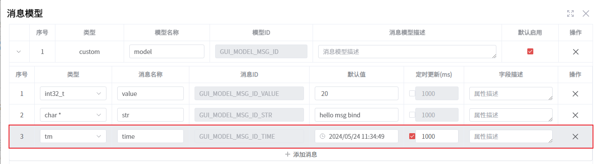
- 创建一个时钟控件，将时钟控件的时间绑定到消息time上。
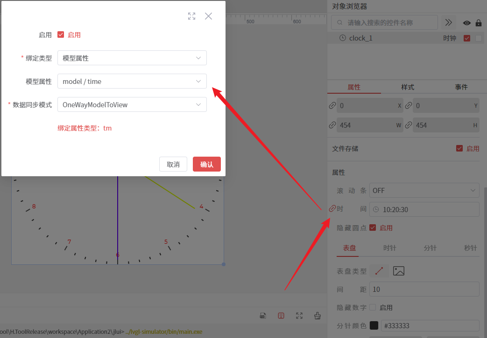
- 在custom中实现消息动作函数。
void gui_model_msg_time_cb(gui_msg_action_t access, gui_msg_data_t * data)
{
time_t now = time(NULL);
struct tm *t = localtime(&now);
if (data == NULL) {
data = &guider_msg_data;
}
memcpy(&data->value_time, t, sizeof(struct tm));
}
- 编译仿真后，可以看到时钟控件的时间会每秒更新一次。
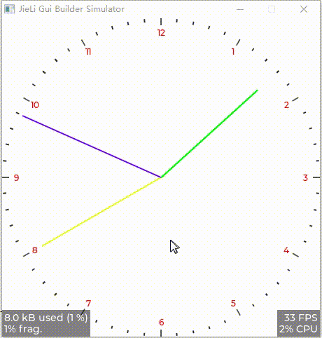
实现图片绑定更新
- 在
编译资源管理中，添加需要的图片资源。
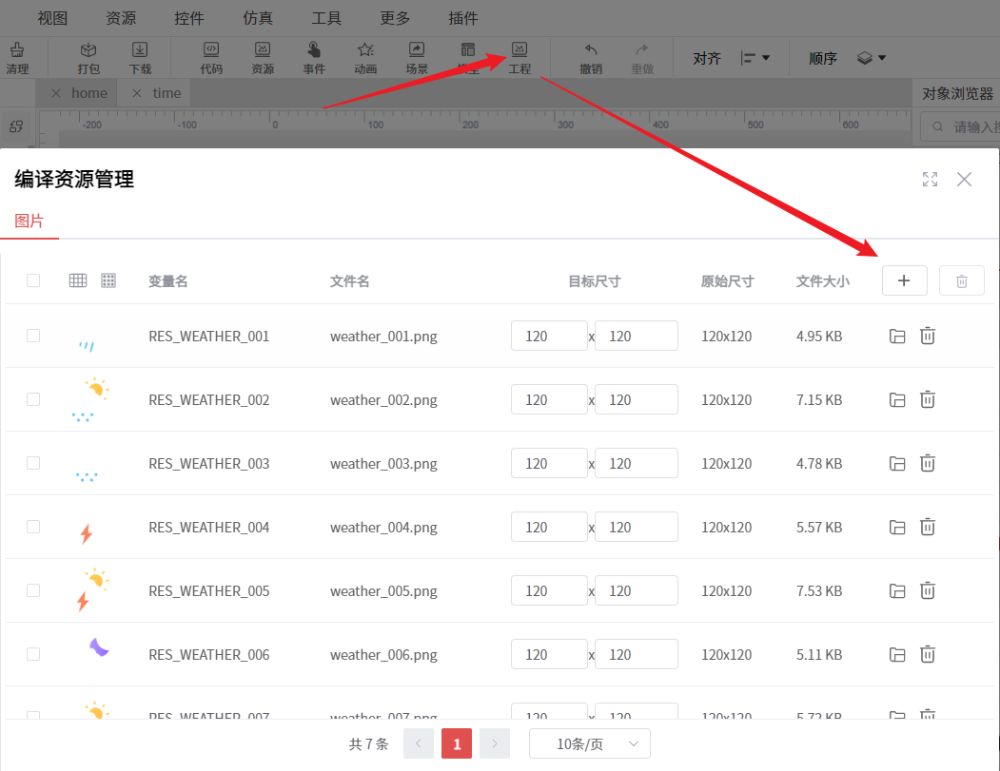
- 创建一个消息，类型为res image id，名字为image，启用定时更新，每秒更新一次。
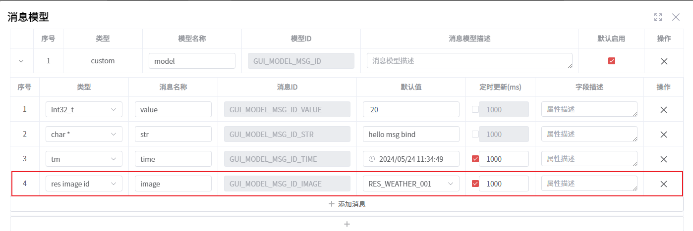
- 创建一个图片控件，将图片控件的图片绑定到消息image上。
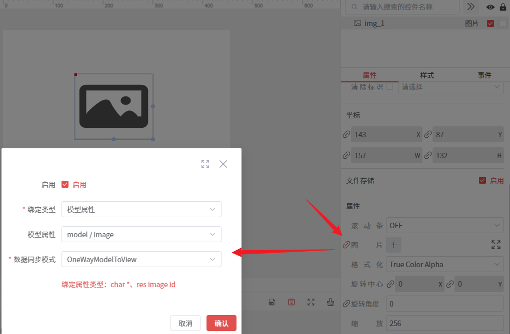
- 在实际项目中，可能需要一个天气预报的图片，每隔一段时间更新一次，这里模拟一个图片更新的例子。
// 这里是刚才编译资源管理中添加的图片资源，已经在gui_res/res_common.h中定义了
// typedef enum {
// RES_WEATHER_001 = 0xD0000000,
// RES_WEATHER_002 = 0xD0000001,
// RES_WEATHER_003 = 0xD0000002,
// RES_WEATHER_004 = 0xD0000003,
// RES_WEATHER_005 = 0xD0000004,
// RES_WEATHER_006 = 0xD0000005,
// RES_WEATHER_007 = 0xD0000006,
// } RES_ID;
int get_weather_image_id()
{
static int index = 0;
index++;
if (index > 6) {
index = 0;
}
return RES_WEATHER_001 + index;
}
void gui_model_msg_image_cb(gui_msg_action_t access, gui_msg_data_t * data)
{
static int index = 0;
if (data == NULL) {
data = &guider_msg_data;
}
if (access == GUI_MSG_ACCESS_GET) {
data->value_int = get_weather_image_id();
}
}
- 编译仿真后，可以看到图片控件的图片会每秒更新一次。
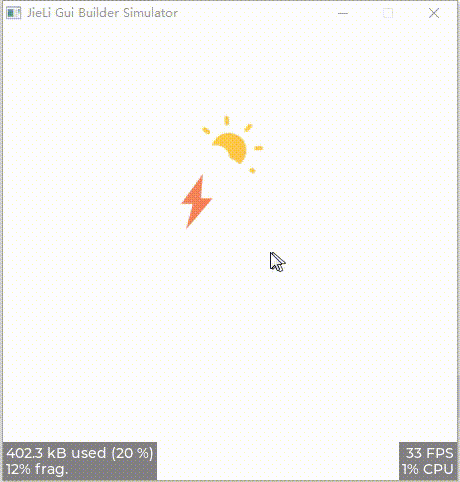
实现控件状态绑定更新
- 添加一个消息，类型为lv_state_t，名字为music_state
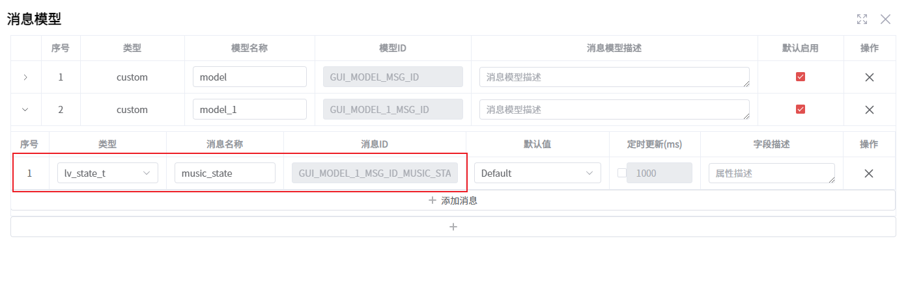
- 添加一个图片按钮控件，将图片按钮控件的状态绑定到消息music_state上，同时设置图片按钮
释放后和选中释放的图片。
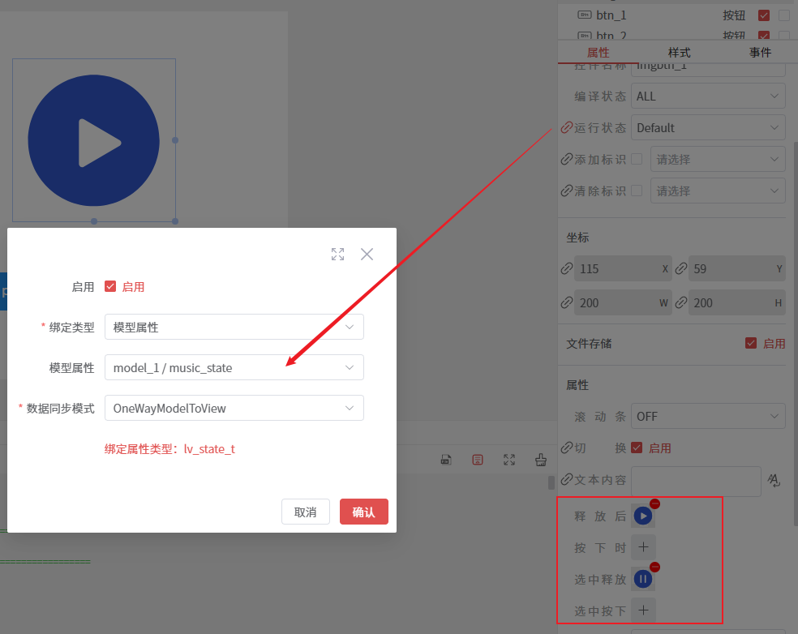
- 增加两个按钮，一个用于播放，一个用于暂停，为两个按钮添加Clicked事件，在
自定义代码上实现发送消息的逻辑。
播放按钮：
gui_msg_send(GUI_MODEL_1_MSG_ID_MUSIC_STATE, (void *)LV_STATE_CHECKED, 1);
暂停按钮：
gui_msg_send(GUI_MODEL_1_MSG_ID_MUSIC_STATE, (void *)LV_STATE_DEFAULT, 1);
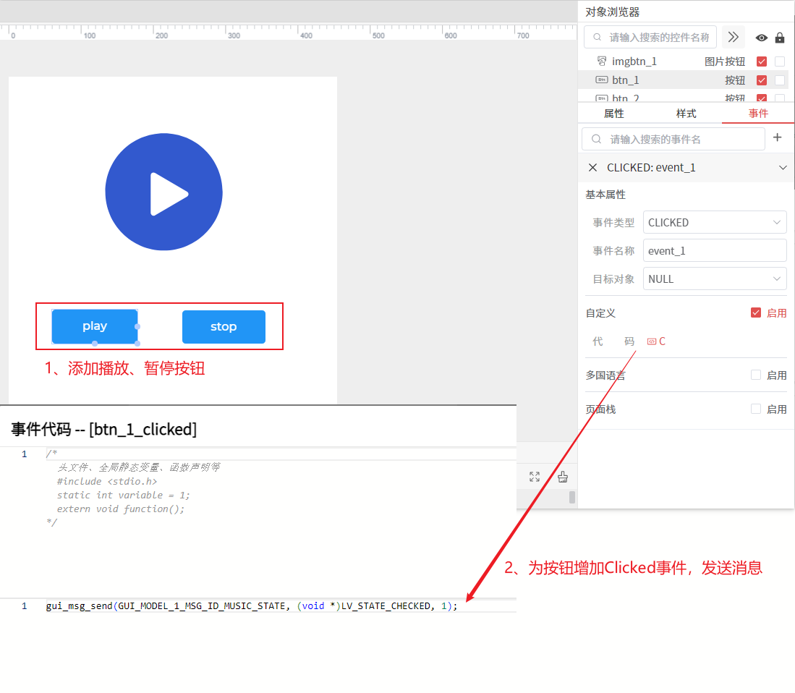
- 编译仿真后，可以看到图片按钮控件的状态会随着按钮的点击而改变，同时图片也会随着状态的改变而改变。
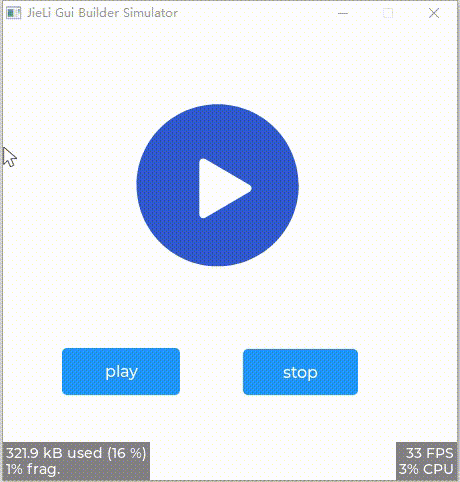
实现控件的隐藏显示
- 添加两个消息，类型为lv_obj_flag_t，名字为add_flag和clear_flag。
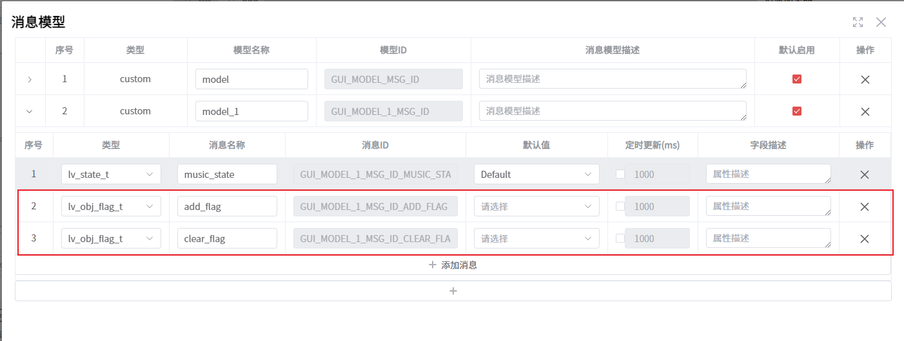
- 添加一个图片控件，将图片控件的
添加标识和清除标识绑定到消息add_flag和clear_flag上。
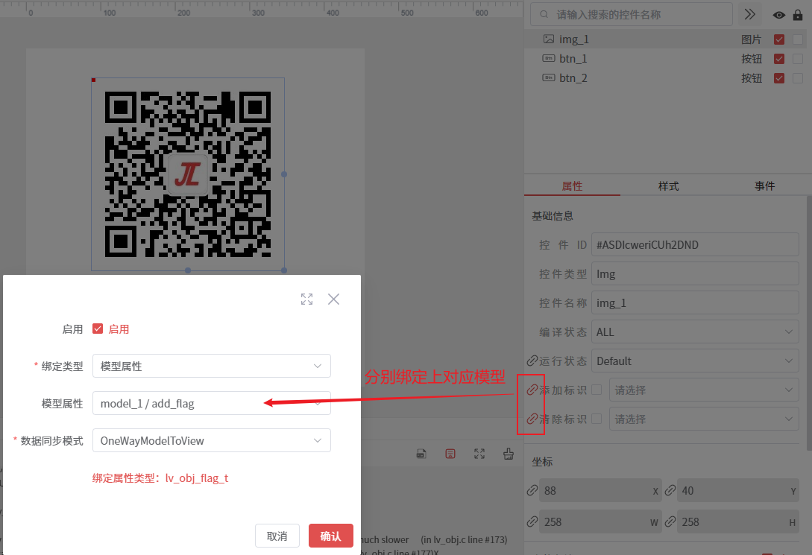
- 添加两个按钮，一个用于显示，一个用于隐藏，为两个按钮添加Clicked事件，在
自定义代码上实现发送消息的逻辑。
显示按钮：
gui_msg_send(GUI_MODEL_1_MSG_ID_CLEAR_FLAG, (void *)LV_OBJ_FLAG_HIDDEN, 1);
隐藏按钮：
gui_msg_send(GUI_MODEL_1_MSG_ID_ADD_FLAG, (void *)LV_OBJ_FLAG_HIDDEN, 1);
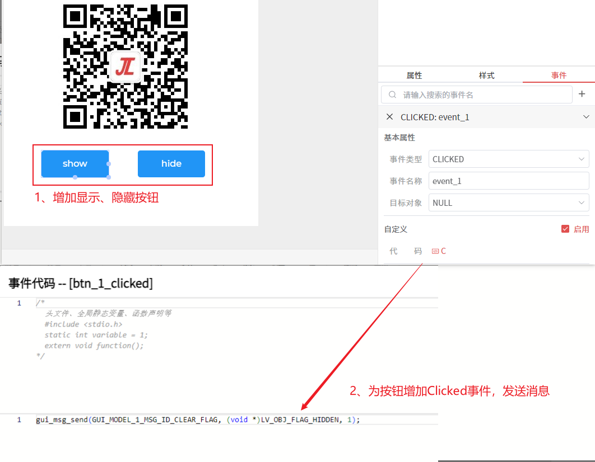
- 编译仿真后，可以看到图片控件的显示状态会随着按钮的点击而改变。
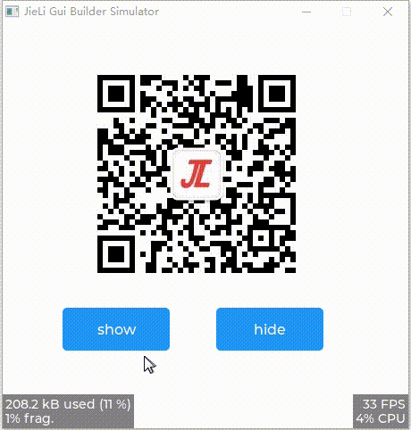
手动更新消息
除了上面的定时更新外，还可以手动更新消息，比如在某个事件发生时，需要更新消息。
void on_button_click()
{
gui_msg_send(GUI_MODEL_MSG_ID_TIME, NULL, 0);
gui_msg_send(GUI_MODEL_MSG_ID_WEATHER_STR, "sunny", 0);
}
控件绑定模型顺序
某些情况下，控件模型绑定的代码生成顺序，会影响到控件的正常使用。比如：给 下拉框 控件的 选项 、 选中选项 绑定模型时，如果代码生成顺序是先绑定 选中选项 ，再绑定 选项 ，那么 选中选项 在控件设置 选项 之前就设置了，会导致 选中选项 无法正常工作。
在 2025.04.09 之后的 UI工具 和 代码生成工具 版本中，控件绑定模型顺序为用户给控件绑定模型的先后顺序。
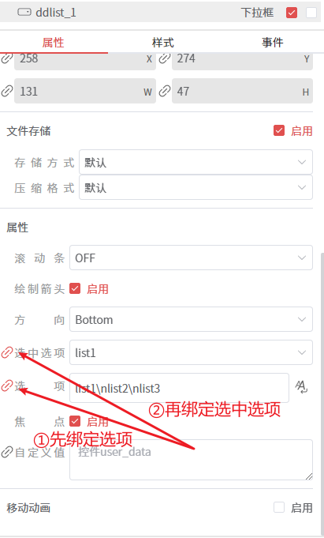
跨模型联动
需要在一个模型值变化时，同步更新另一个模型，实现模型之间的联动更新。
- 添加两个消息：
bar_var（int32_t）和bar_text（char *）
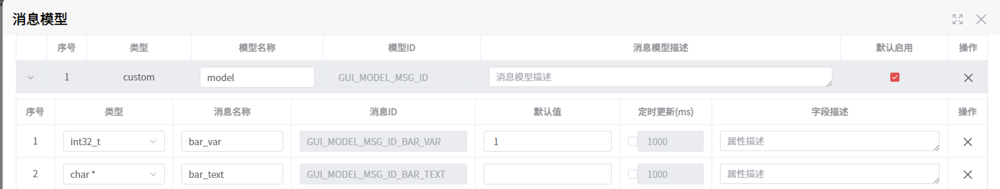
- 添加一个滑动条控件，将滑动条值绑定到
bar_var。
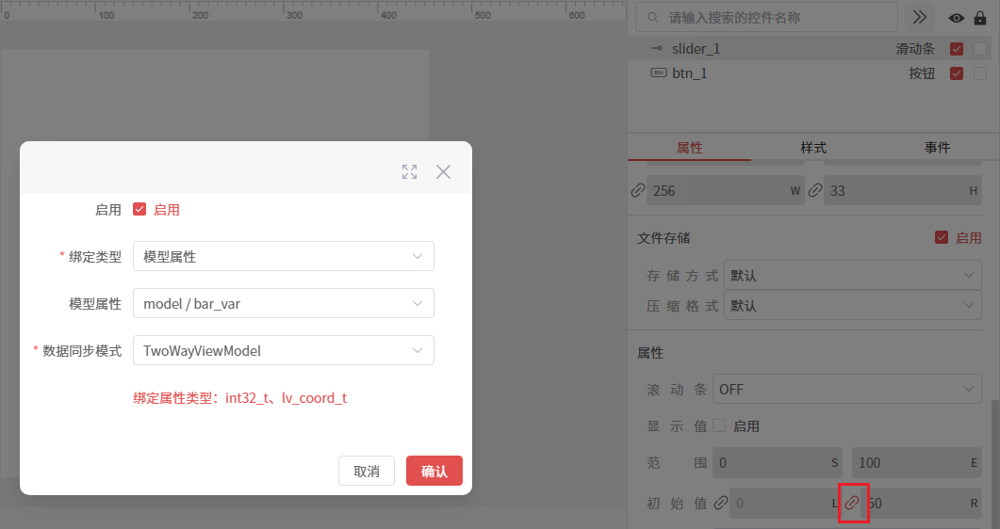
- 添加一个按钮控件，将按钮文本绑定到
bar_text。
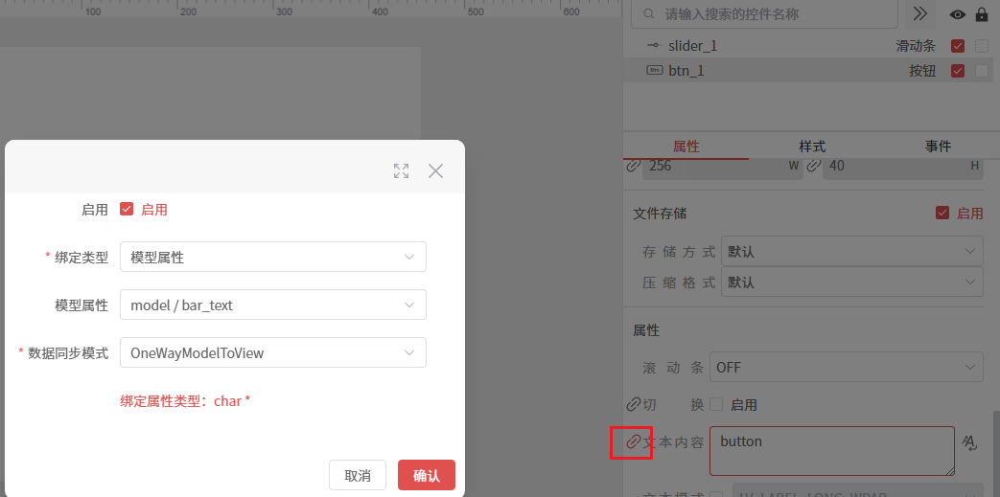
- 在
自定义代码中强定义gui_model_msg_bar_var_cb：- 先更新
bar_var； - 再拼接字符串并发送
GUI_MODEL_MSG_ID_BAR_TEXT； - 最后恢复
data->value_int，避免嵌套发送影响当前消息分发。
- 先更新
int gui_model_msg_bar_var_cb(gui_msg_action_t access, gui_msg_data_t * data, gui_msg_data_type_t type)
{
static int32_t bar_var_var = 1;
_gui_msg_int32_cb(&bar_var_var, access, data);
if (access == GUI_MSG_ACCESS_SET)
{
char str[16];
int32_t len = (int32_t)snprintf(str, sizeof(str), "bar var: %" PRId32, bar_var_var);
if (len < 0) {
return -1;
}
gui_msg_send(GUI_MODEL_MSG_ID_BAR_TEXT, str, len + 1);
// 因为gui_msg_send会改变全局guider_msg_data的值，所以需要将数据恢复，避免之后通知到slider时值异常
data->value_int = bar_var_var;
}
return 0;
}
编译仿真后，拖动滑动条会同时更新按钮文本。
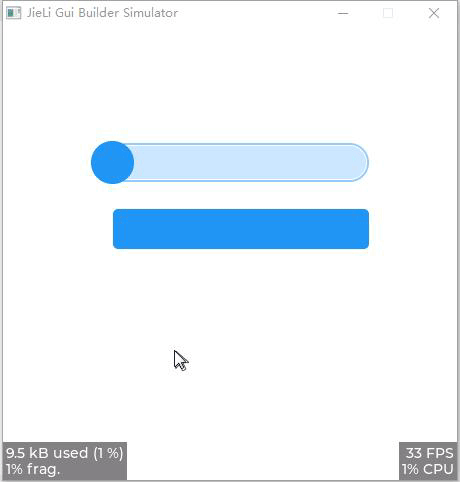
控件绑定模型列表、自定义 Set_cb
有些场景下，模型值更新到控件后，还需要针对单个控件做额外处理，比如阈值变色、状态切换、告警提示等。这时可以给控件绑定模型后，再在该绑定项上编写 Set_cb 回调，把业务逻辑写在控件侧。
- 添加一个消息，类型为
int32_t，名字为bar_var。
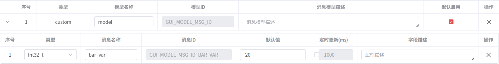
- 添加一个进度条控件，将进度条的
Value绑定到bar_var。
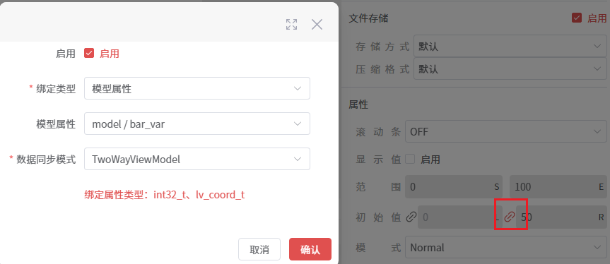
- 在
控件模型绑定弹窗中，点击添加按钮，添加bar_var的绑定，同时编写Set_cb回调。
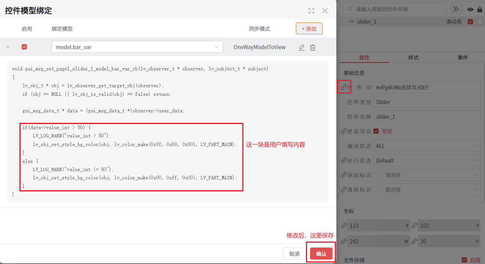
- 在
Set_cb回调中获取当前控件对象和模型值，根据自己的需求编写逻辑。下面示例中，当bar_var大于50时将进度条颜色改为红色，否则改为绿色。
void gui_msg_set_page1_bar_1_model_bar_var_cb(lv_observer_t * observer, lv_subject_t * subject)
{
lv_obj_t * obj = lv_observer_get_target_obj(observer);
if (obj == NULL || lv_obj_is_valid(obj) == false) {
return;
}
gui_msg_data_t * data = (gui_msg_data_t *)observer->user_data;
// 下面的代码是示例代码，用户可以根据自己的需求编写逻辑
if (data->value_int > 50) {
lv_obj_set_style_bg_color(obj, lv_color_make(0xff, 0x00, 0x00), LV_PART_MAIN);
} else {
lv_obj_set_style_bg_color(obj, lv_color_make(0x00, 0xff, 0x00), LV_PART_MAIN);
}
}
提示
如果用户需要统一管理、编写 Set_cb，可以在 自定义代码 中强定义 gui_msg_set_page1_bar_1_model_bar_var_cb 函数去，这样就不需要在UI工具上编写具体的回调函数实现了。
- 编译仿真后，当
bar_var的值变化时，会自动进入这个Set_cb回调。用户可以在这里实现自己的需求，例如动态改样式、阈值告警、显示隐藏、启动动画等。
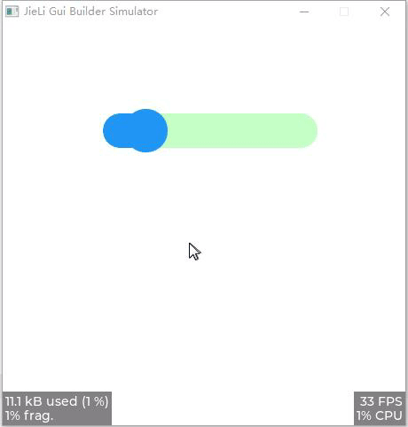